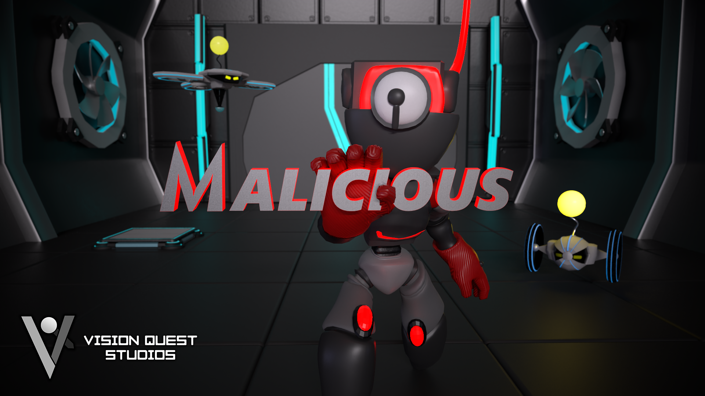
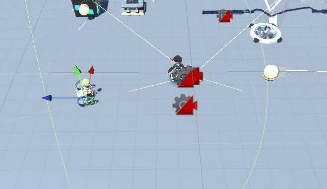

Malicious
For the final project of my advanced diploma of games development, I was placed into a group of 7 developers with 3 artists, 3 designers and myself as the sole programmer
the game that we developed is a 3D Puzzle Platformer where you play as a virus that must escape from its creator.
This game brought alot of challanges and I learnt alot about developing in a team.

- Hacking Mechanic
- Wire Mechanic
- Fan Mechanic
One of the biggest challenges that this project brought was the hacking mechanic. This mechanic was challanging for me as it requried me to learn how to develop more modular and reuseable code as this hacking mechanic had to work alongside the enemy, blocks, drone, spring and wire mechanics. I solved this issue by making a base class of hackable that was then inherited by all mechanics that needed it. allowing the player to enter and exit without affecting any of the code for that specific mechanic itself

To add verticality to the platforming without directly allowing the player to jump up all the blocks, the designers came up with the wire mechanic. This mechanic allows the player to enter into a wire and using the wasd, space and ctrl keys to place wires and move along them. The wire does raycasts to check if a wire can be placed and is checked against a layermask to give the designers more options. the player also has a limit on the amount of moves they can do. At any time the player can launch themselves out of the wire in the direction they are facing.

This fan mechanic taught me the most about games development in a team. This mechanic had a few smaller features to make it a better fan then just applying force in a direction
such as a dot product check for the current objects velocity and applied extra force accordingly (this was done to allow for smoother fan pushing when the fan was horizontally pushing),
the fan also used a different force to push based on the distance away from the object it was pushing. I implemented this because I wanted a smarter fan then just pushing. This however led me to
learn quite alot as when explaining the fan to my other team members they didn't understand what I was trying to add to the fan, and it caused alot of communication issues.
I learn't alot from this experience as it taught me how to communicate with less technically literate team members, the need for tooling and variable limit setting, good descriptions (in unity's case tooltips),
and most importantly knowing when something actually adds to the game rather than wasting time adding extra features that will not be noticed by the general player base and to spend time refining what will be noticed.
This ground enemy shown below just had simple seek behaviours with a limited turning speed. It acts as one of the main dangers to the player

Our final game was fully playable with a full sprint schedule of alpha, beta and gold. Our end result had very few bugs and none of them were game breaking.
The final build is avaiable on itch here.